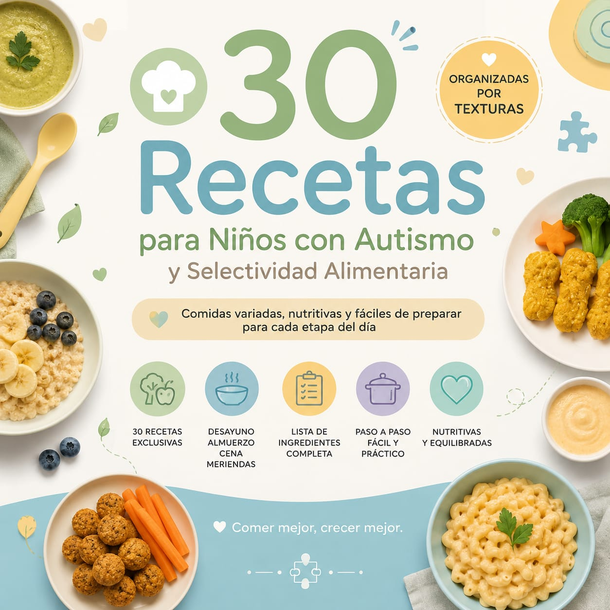

30 recetas exclusivas
Ideas variadas para ampliar las posibilidades en cada comida del día.
Recetas prácticas con ingredientes fáciles para niños con autismo y selectividad alimentaria, organizadas por texturas para acompañar la rutina de cada familia.

Una guía visual y práctica para transformar la planificación de las comidas en un momento más ligero.
Contenido directo, lenguaje claro y recetas fáciles de consultar.
Ideas variadas para ampliar las posibilidades en cada comida del día.
Encuentra alternativas de acuerdo con diferentes preferencias sensoriales.
Preparaciones claras con lista completa de ingredientes.
Desde el desayuno hasta la cena, tendrás ideas variadas con ingredientes fáciles y preparaciones prácticas reunidas en un solo lugar para descargar en tu celular.
Opciones para comenzar el día con más variedad.
Comidas prácticas para la rutina familiar.
Ideas sencillas para terminar bien el día.
Alternativas para los pequeños momentos.
Cada receta presenta lo necesario para que puedas organizarte con facilidad y preparar nuevas opciones sin complicaciones.
Lista completa de ingredientes
Preparación paso a paso
Opciones para diferentes momentos
Organización visual y sencilla
Descarga RECETAS TEA en tu celular con un único pago, sin mensualidades.
RECETAS TEA para descargar en tu celular, con 30 recetas organizadas por texturas y fáciles de consultar.
Ideas para desayunos, almuerzos, cenas y meriendas, además de organización por texturas.
No. El precio anunciado es un único pago de US$ 9,00.
No. Esta guía tiene finalidad educativa y no sustituye la evaluación individual de profesionales de salud o nutrición.